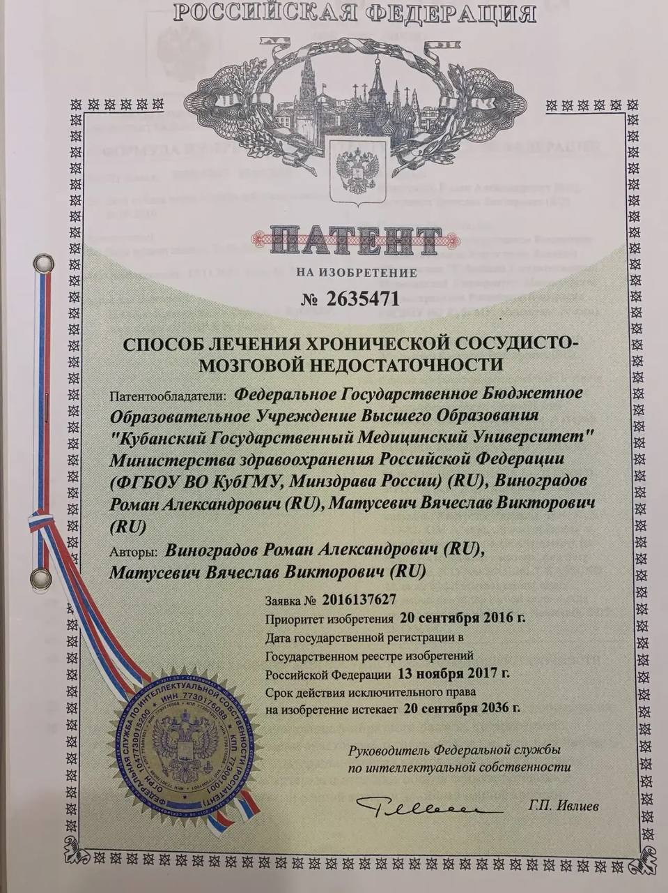

Высокие стандарты сосудистой хирургии
Матусевич
Вячеслав Викторович
Помощь экспертного уровня для пациентов любого возраста.
Записаться на прием
Высокие стандарты сосудистой хирургии
Помощь экспертного уровня для пациентов любого возраста.
Записаться на прием
Фундаментальные знания
От академической базы КубГМУ до узкой специализации. Постоянное обучение — мой залог безопасности и предсказуемого результата.

Базовое образование
КубГМУ

Ординатура
ССХ

УЗ-диагностика
Проф. переподготовка

Допуск к ССХ
Аккредитация
Инновации в хирургии
Автор более 30 научных работ. Уникальные способы лечения патологий артерий и вен.

Способ реконструкции бифуркации сонных артерий при протяженном поражении ВСА

Профилактика периферических неврологических осложнений при КЭЭ

Лечение недостаточности нижних конечностей при аневризме аорты 3B по Дебейки

Способ лечения хронической сосудисто-мозговой недостаточности


Скрининг системы и постановка диагноза за один визит.
Реконструктивные операции на сонных артериях, аорте и нижних конечностях.
Индивидуально